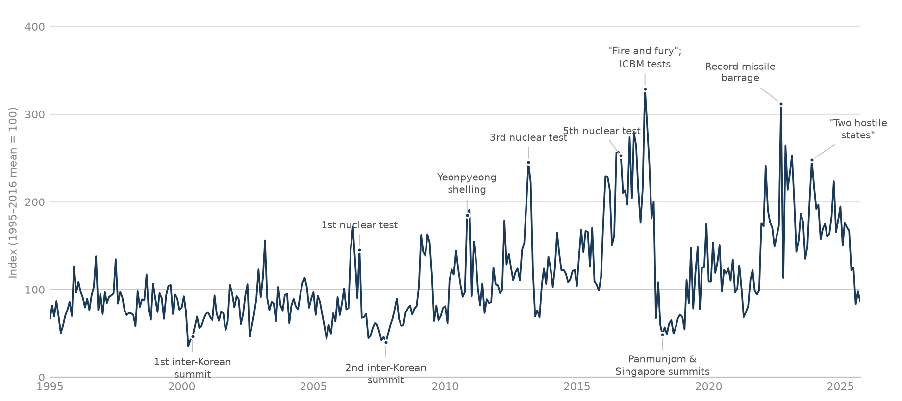
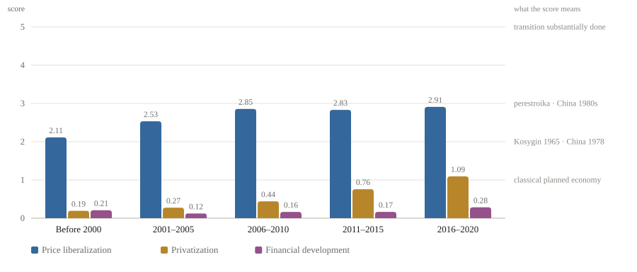

Data
Datasets built for my research on the North Korean economy, released so that others can use and check them. Free to download; please cite the accompanying paper.
GPRNK Index
A news-based index of geopolitical risk arising from North Korea, built from article counts in 18 South Korean newspapers and broadcasters. It rises around nuclear tests, missile launches and armed clashes, and falls around summits. The release includes the headline index, its negative and positive components, and four subtopic series — military tensions, sanctions, talks, and economic cooperation.

From Lee, Lee and Jung (2026), Applied Economics Letters. Open the dataset →
North Korean Marketization Index
How far the North Korean economy has moved toward the market in three dimensions — price liberalization, privatization and financial development — each scored on a five-point scale. It applies the method of Jung, Yang and Kim (2022) to the Ministry of Unification’s published survey of 6,351 defectors, so that unlike the original index it can be reproduced from public sources.

Method from Jung, Yang and Kim (2022), Asian Perspective. Open the dataset →